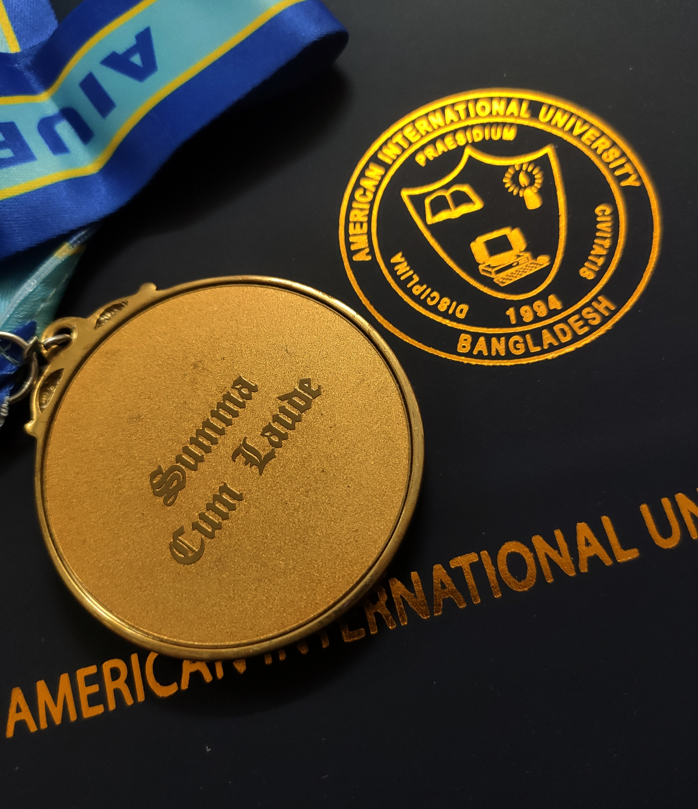
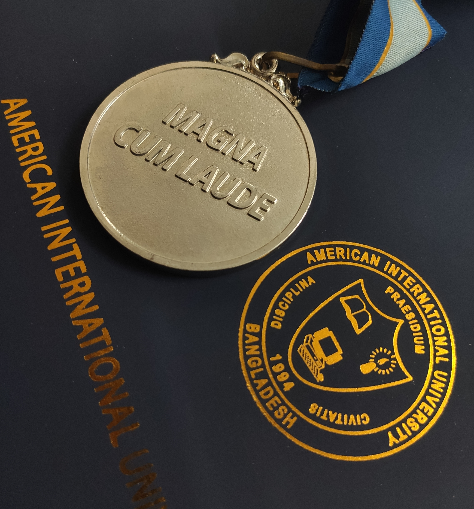
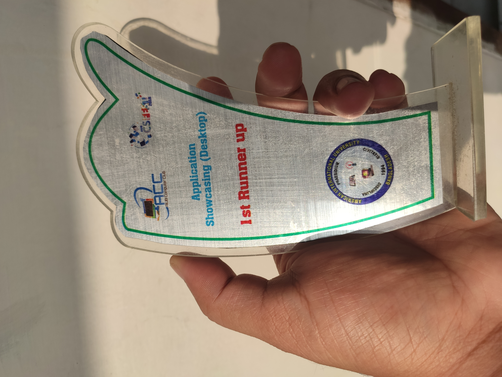
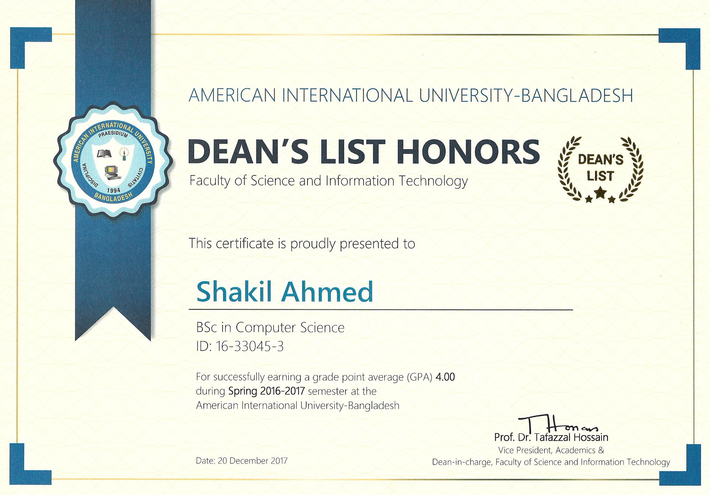
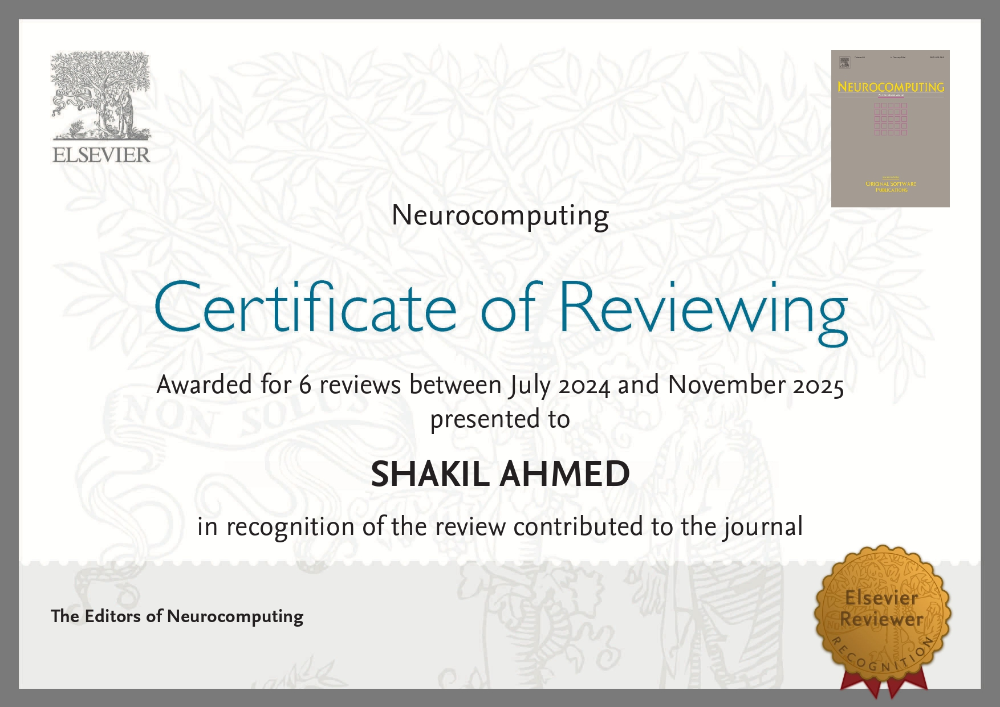
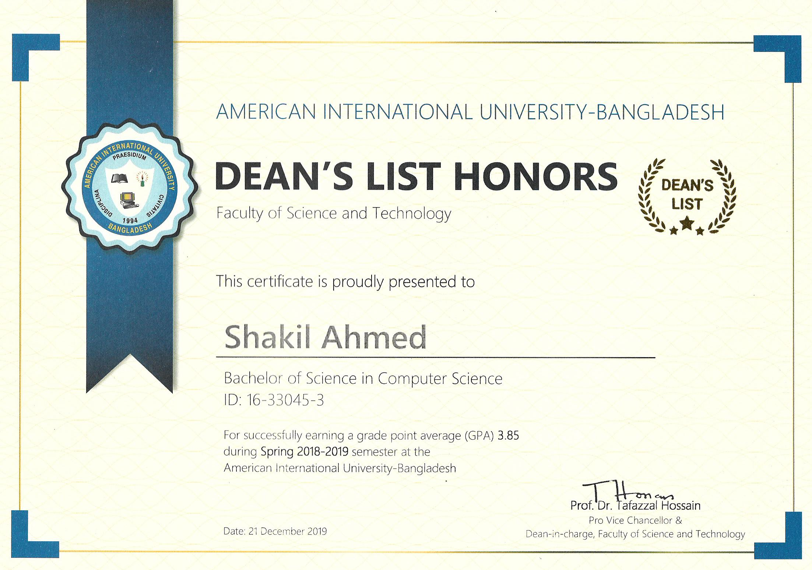

09 · Get in touch
Open to PhD positions and research collaborations. Get in touch.
Visitors · Live tally

Researcher · MSc CS · Aarhus, DK
01 · About
My MSc thesis applies BioCLIP2, a 200M-image vision foundation model, to the unsupervised fine-grained clustering of insect imagery. The aim is to reduce the annotation bottleneck that limits ecological research at scale. My earlier work covers attention-based video captioning, IoT-based safety devices, and underwater object detection and tracking. I am currently seeking a PhD position in computer vision and deep learning.
02 · Current Focus
Adapting large pretrained vision models such as BioCLIP2, CLIP, and DINO to specialized domains where labels are scarce. Transfer learning, fine-tuning, and self-supervised representation learning.
Using deep learning to organize and interpret large unlabeled image collections from ecological surveys. Current work: unsupervised, fine-grained clustering of insect imagery to support taxonomists.
Running computer-vision models directly on cameras, drones, and embedded devices rather than the cloud. Model compression, quantization, and lightweight architectures for real-time field deployment.
03 · Trajectory
Coursework in deep learning for visual recognition, data visualization, and cryptology. Thesis on unsupervised fine-grained clustering of insect biodiversity using BioCLIP2.
Specialization in intelligent systems. Graduated Summa Cum Laude.
Three Dean's List honors and graduated Magna Cum Laude.
Lab instruction, problem-set design, and supporting students through research-heavy CV coursework.
Cross-platform mobile applications shipped under government ICT Division initiatives.
Lab supervision and assessment for undergraduate Java programming.
04 · Publications
Fetching live citation counts from OpenAlex…
An attention-based encoder–decoder that combines a bi-directional LSTM with a sequential LSTM to generate natural-language descriptions of video.
An IoT-based wearable safety device combining sensors, GPS, and SMS-trigger logic to alert authorities and family during unlawful events.
A multicriteria decision-analysis framework using a calibrated Random Forest classifier to recommend optimal ISPs from heterogeneous user-experience signals.
A comparative study of vision-based methods for detecting and tracking underwater objects, with discussion of domain-specific challenges and benchmarks.
05 · Thesis in motion
This MSc thesis develops an unsupervised pipeline built on BioCLIP2, a vision foundation model pretrained on the 200M-image Tree-of-Life dataset, to organize unlabeled insect imagery without manual annotation. The objective is to evaluate how effectively domain-specific foundation models can structure large-scale biodiversity data, and to support ecological research where expert labeling is the principal bottleneck.
Aarhus University · 2024–2026 · Supervised by Kim Bjerge & Christian N. S. Pedersen
06 · Network
Every line is a coauthorship. Drag any node to reshape; hover to highlight that author's collaborators. Toggle to view the research-concept network instead.
07 · Technical Skills
08 · Recognition






09 · Get in touch